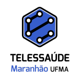

quem dá
o laudo,
lá
o exame foi feito
aqui
?
Telediagnóstico
a distância
Telediagnóstico
laudo ou parecer

oferece serviços de
telediagnóstico
telerretinografia
eletrocardiograma
em incorporação
tele-espirometria
{{UFG}}
{{UFMG}}
ampliar o acesso
aos exames
fortalecer a Atenção
Primária à Saúde
de tempo